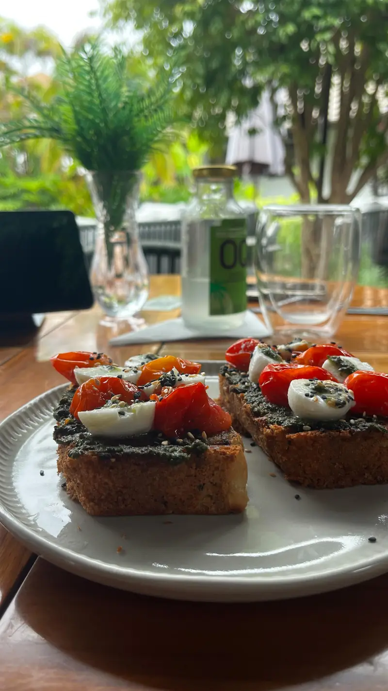
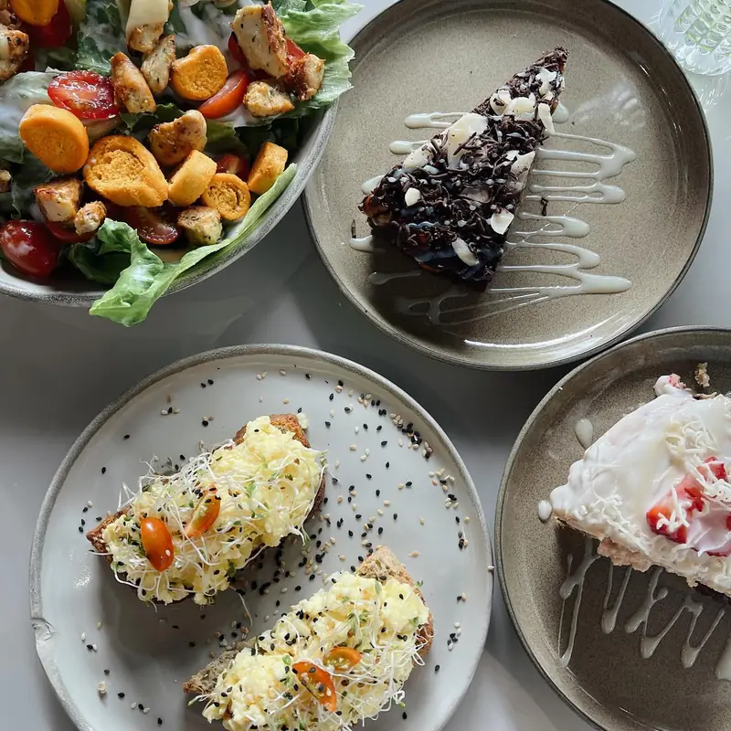
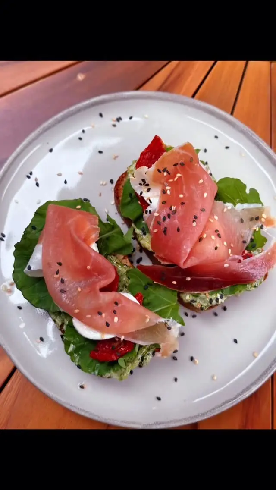
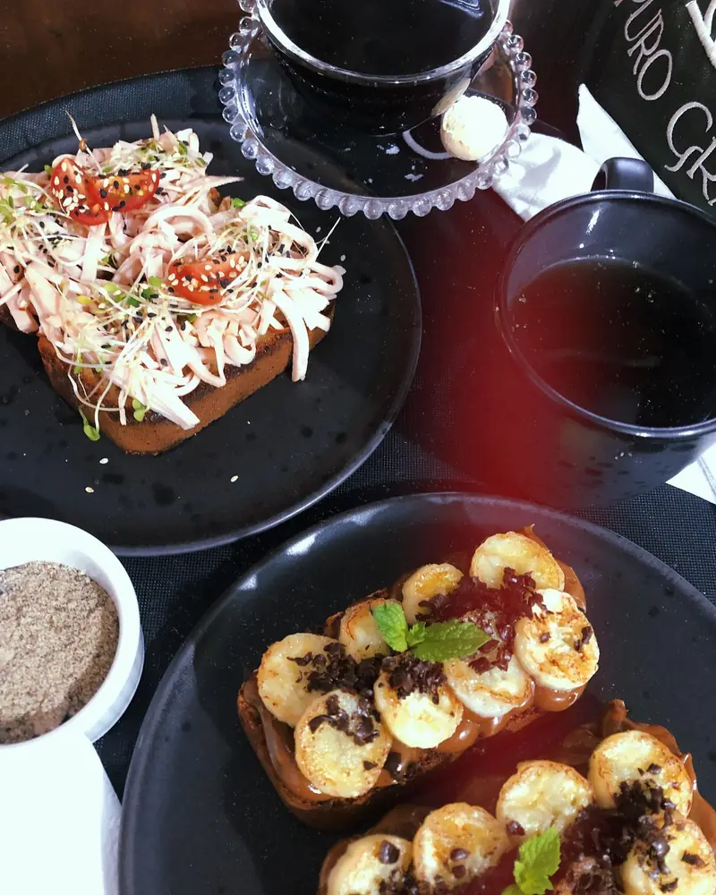
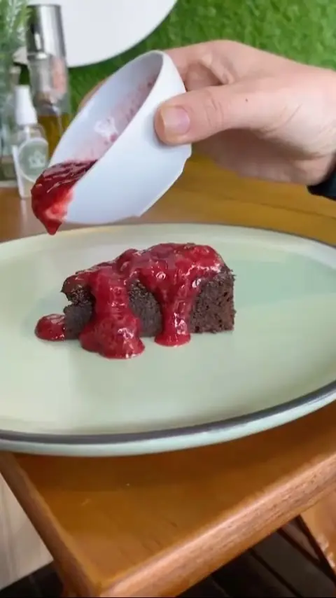
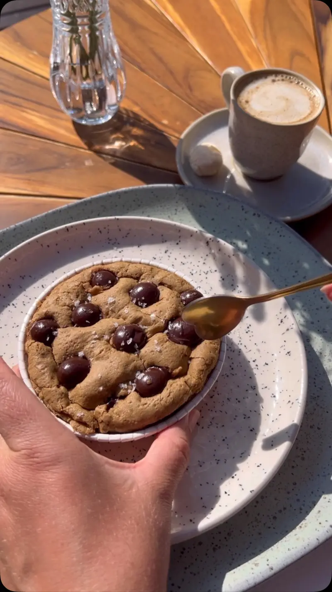
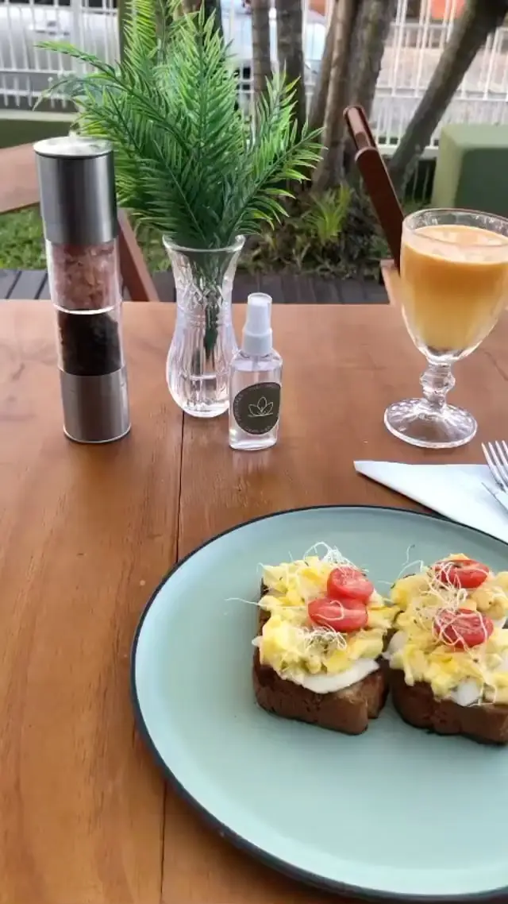
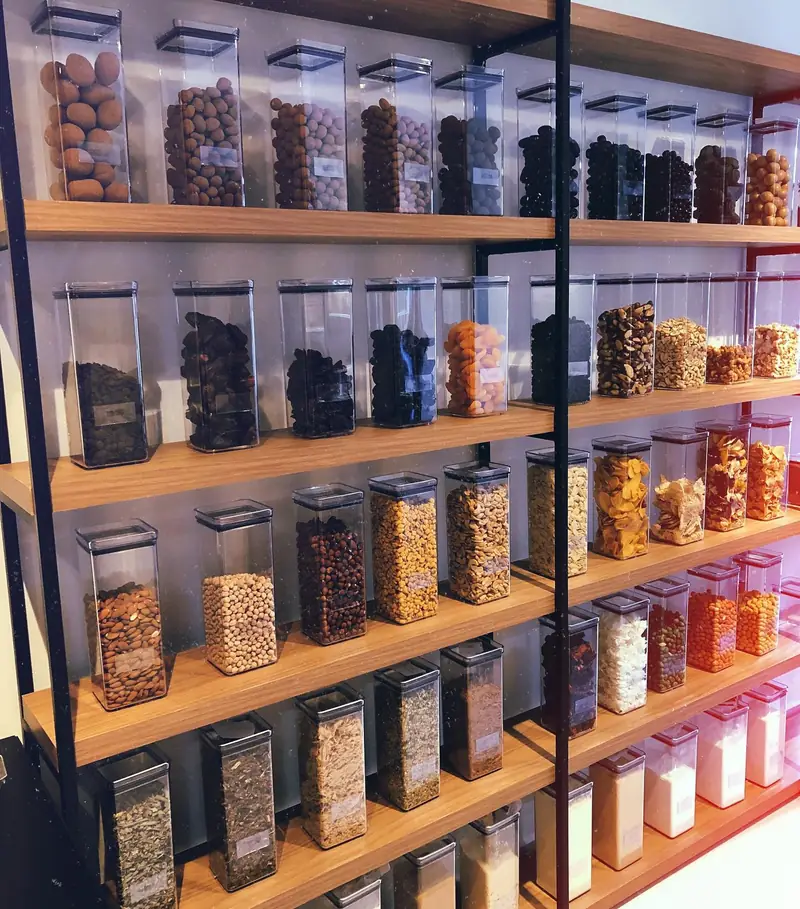

Nossa essência
No Puro Grão, cada detalhe é pensado para quem busca equilíbrio sem abrir mão do sabor. Pratos leves, ingredientes naturais e um ambiente cercado de verde — para desconectar, encontrar pessoas e viver momentos de paz.


Cardápio






Empório saudável
Produtos naturais a granel com toda a linha de oleaginosas, farinhas, grãos e muito mais — selecionados para deixar sua rotina mais saudável.
Consultar produtosNosso ambiente
Mesas ao ar livre cercadas de plantas, café passado na hora e um cardápio pensado para fazer bem. Venha conhecer de pertinho.
Visite-nos
Segunda a sexta · 10h às 19h
Sábado · 11h às 19h
Rua Maestro Serafim Silva, 845
Urussanguinha · Araranguá/SC